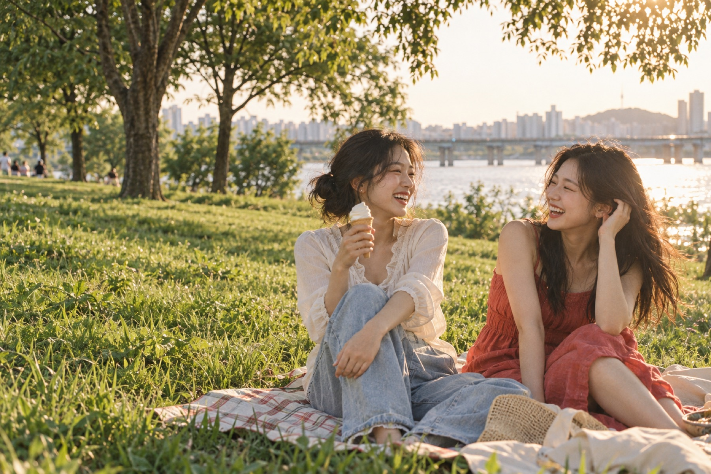
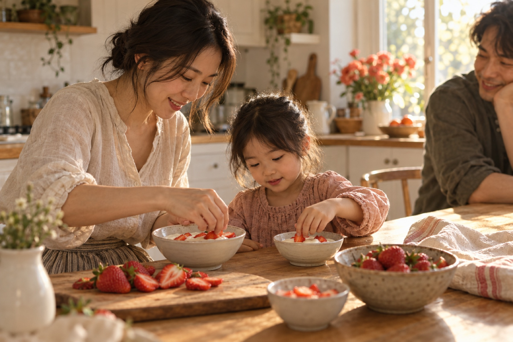
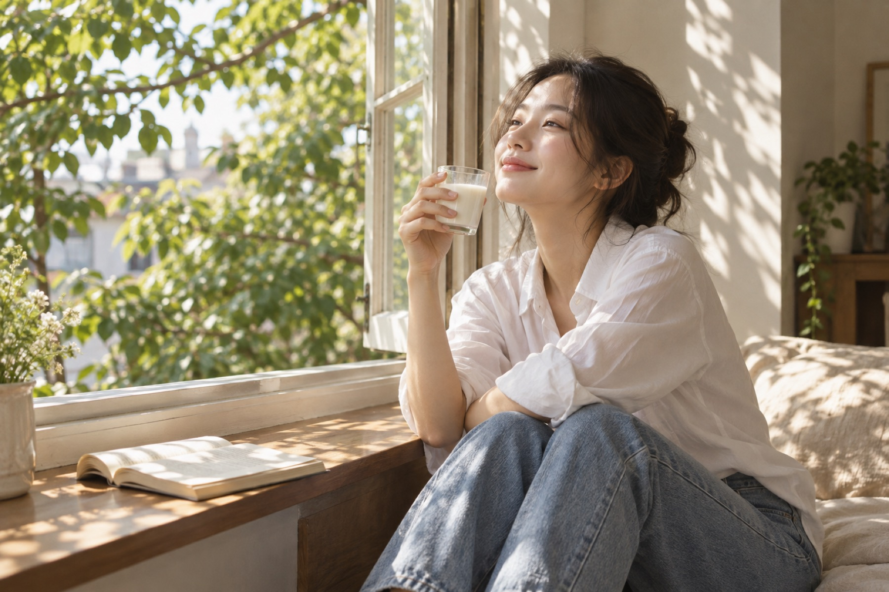

부사
입을 약간 벌리고 소리 없이 부드럽게 웃는 모양.
표준국어대사전우리의 일상과 함께해 온 빙그레의 여정
별일 없는 하루에도, 오래 기억하고 싶은 순간에도.가까이에서 전하는 작은 즐거움.
01이름
마음에서 우러나와 소리 없이 번지는 웃음, 빙그레.
입을 약간 벌리고 소리 없이 부드럽게 웃는 모양.
표준국어대사전빙그레의 이름에는 도산 안창호 선생이 이야기한 밝은 웃음의 정신이 담겨 있습니다.
좋은 제품으로 건강과 행복을 나누겠다는 마음은 오늘도 우리의 출발점입니다.
이름에 담긴 철학 읽기 ↗익숙한 한 입에, 반가운 얼굴에.
평범했던 하루가 조금 더 즐거워집니다.

익숙한 한 입에, 반가운 얼굴에.
평범했던 하루가 조금 더 즐거워집니다.
같은 식탁에 둘러앉은 시간.
함께하는 맛은, 오래 남는 기억이 됩니다.

같은 식탁에 둘러앉은 시간.
함께하는 맛은, 오래 남는 기억이 됩니다.
잠깐의 쉼에도, 새로운 시작에도.
나를 위한 작은 즐거움을 채웁니다.

잠깐의 쉼에도, 새로운 시작에도.
나를 위한 작은 즐거움을 채웁니다.
59년
1967년 대일양행에서 시작해
오늘까지 이어진 시간
1982
‘빙그레’라는 이름으로
새롭게 시작한 해
4곳
상하이 · 미국 · 베트남 · 호주
해외 법인
9월, 주식회사 대일양행 설립.
남양주시 도농동에 제1공장을 준공했습니다.
대일유업에서 빙그레로 사명을 변경했습니다.
빙그레 식품연구소를 열었습니다.
유음료 부문 HACCP 인증을 획득했습니다.
새로운 비전을 선포하며 다음 도약을 준비했습니다.
상하이에 현지 법인을 설립했습니다.
미국 법인을 설립하고, 한글 글꼴 빙그레체를 무료로 배포했습니다.
건강지향 통합 브랜드 TFT를 선보이고 베트남 법인을 설립했습니다.
해태아이스크림을 인수했습니다.
단백질 전문 브랜드 더:단백을 론칭했습니다.
호주 법인을 설립했습니다.
4월, 해태아이스 소규모 합병을 진행했습니다.
반세기를 함께한 제품부터 새로운 일상의 선택까지.
제품마다 이어지는 이야기를 만나보세요.